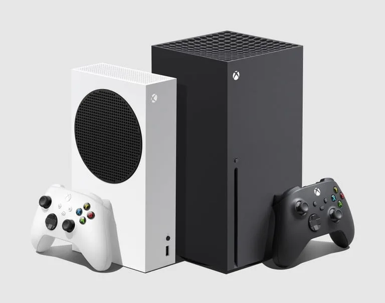
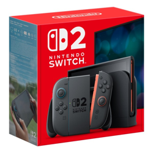

PlayStation y Xbox


Ambas consolas ofrecen juegos exclusivos y servicios en linea. La eleccion depende del catalogo que mas te guste.

Ambas consolas ofrecen juegos exclusivos y servicios en linea. La eleccion depende del catalogo que mas te guste.

Es una consola hibrida. Se puede usar en casa o en modo portatil.
Orden sugerido para conocer consolas: